说明：配置监控
一、背景
如果你想监控Zeus上场景配置中规则的命中情况，可以使用该功能配置监控进行命中告警
目前监控能力覆盖范围（以下业务开通该功能）：
erwa监控能力覆盖空间
1-反作弊
3-用户账号（北京侧）
4-反刷单（北京侧）
5-商户账号（北京侧）
6-验证中心
8-处罚中心
9-Zeus测试
23-反作弊.酒店
24-反作弊.外卖
25-反作弊.支付
26-反作弊.团购
27-反作弊.猫眼
28-反作弊.其它
29-风控配置
33-反作弊反刷单（上海侧）
34-运营平台
36-反刷单.酒店
37-用户账号（上海侧）
38-通用反作弊（上海侧）
39
40
51-数据安全
52
53
55
58-Zeus试用
66-金融服务平台信息安全-入侵检测
67-反作弊.租车
78-反作弊.出行
80-用户账号（北京侧）.虚假账号
90-反作弊.机票
91-SSO账号业务安全
96-数据测试验收
97-太平洋工单
98-反骗赔（北京）
122-离线引擎
130-反入侵
152
155
希望添加开通支持新的业务空间，请联系wangyaliang进行配置。
一个空间开启erwa能力，标记规则 和 生效规则 是两个配置，要分别开启。如果只开启了生效规则的erwa能力，则标记规则依旧无法被erwa监控
二、名词解释
告警监控： 对网络运行的过程中出现的风险事件和状况进行监测和报告，告警指示这些事件和状况的结果
告警维度：规则命中触发告警之后在告警明细中展示这些信息（后台也只记录这些信息）
聚合时间：在该时间段之内命中规则仅触发告警一次，不重复进行告警
聚合维度：类似于SQL中的“groupby”，按照哪些字段进行聚合，在聚合时间之内所有风险在相同的聚合维度命中仅告出一次
风险事件：注意区别于Tatooine事件，erwa平台的风险事件含义是指：监控告警配置每次触发，都会产生的一个待用户关注的告警通知，同告警规则、同聚合维度、同聚合周期内的多次告出，都聚合在这个事件里，计风险次数。
三、操作指南
1.用户操作流程说明
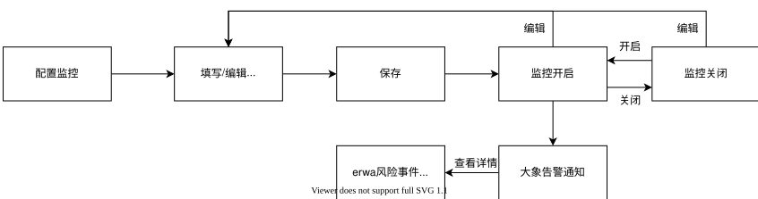
2.Quick Start
3.详细操作流程说明
原Erwa平台新建告警配置中的【Zeus实时】数据源，已于2022.11.1正式下线，实时数据源统一收口至【zeus-rpc】。对于实时规则的监控，请统一于zeus场景配置后方操作栏入口进行配置。
Step1: 配置入口 |
||||||||||||||||||||||
|
入口： 点击场景-->场景配置-->选择目标场景配置 |
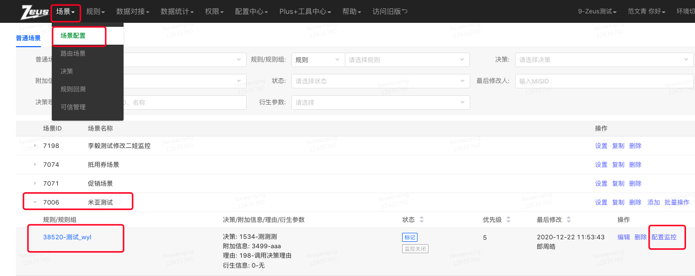 |
|||||||||||||||||||||
Step2: 配置监控 |
||||||||||||||||||||||
|
1.点击“配置监控”； 2.填写监控项配置内容并保存； 通过Zeus入口配置监控后，会自动在Erwa告警平台生成一条监控告警配置（ID在zeus展开抽屉中可见）；其中，默认的监控逻辑为「该条场景配置的命中」，例：include(string.split(hitRules,','),55938)，55938即为zeus规则id。 注意，该表达式隐含了场景、决策信息，即实际效果是该【场景-规则-决策】每当有命中数据，erwa就会结合聚合维度与聚合时间，决定是否告出。
3.编辑监控项配置内容： 在监控规则详情页中点击“编辑”，之后按照上面配置内容的流程进行即可 |
1.点击“配置监控”； 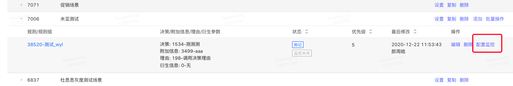 2.填写监控项配置内容并保存； 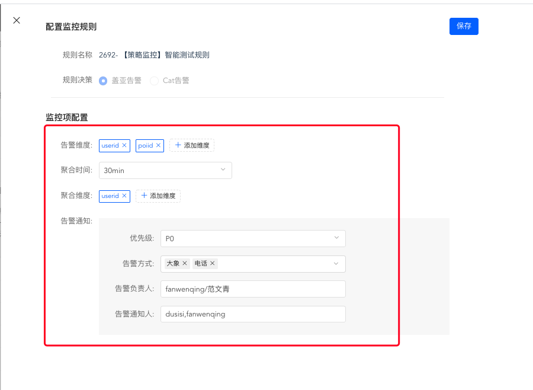 3.编辑监控项配置内容： 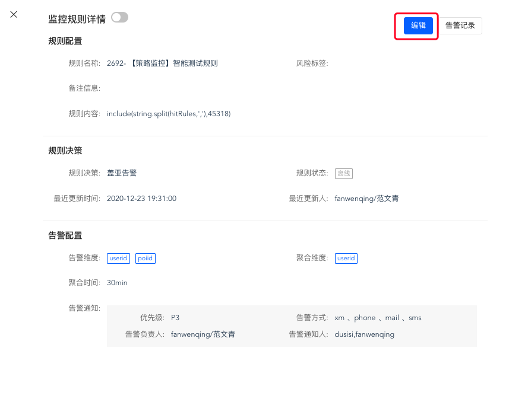 |
|||||||||||||||||||||
Step3: 开启监控 |
||||||||||||||||||||||
|
1.开启监控入口A：
2.开启监控入口B： 回到场景配置信息中，在场景配置的操作项中点击“开启监控”，进入监控规则详情页面，再按照开启监控入口1的操作进行即可 |
开启监控入口A： 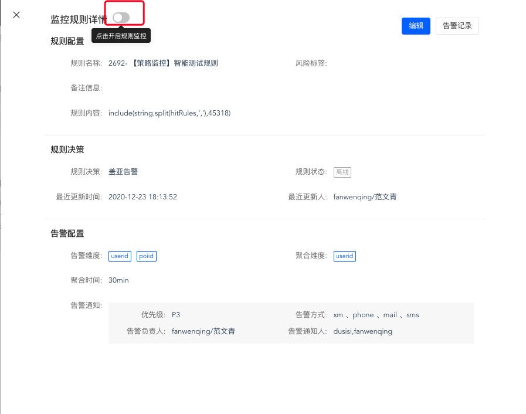 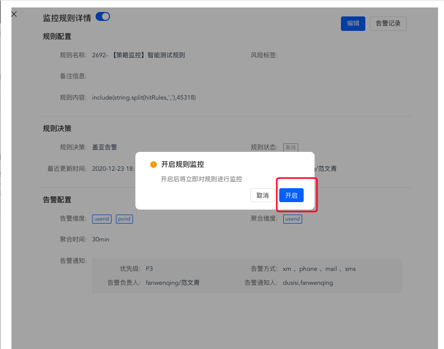 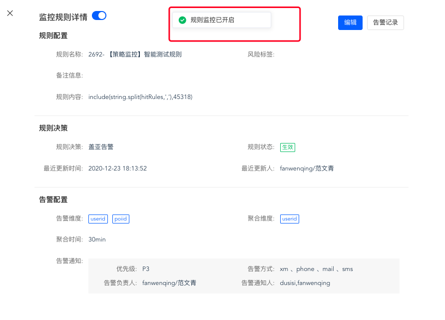 开启监控入口B： 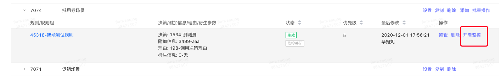 |
|||||||||||||||||||||
Step4: 接收与处理告警消息 |
||||||||||||||||||||||
|
以常用的大象告警消息为例进行介绍。（注：erwa告警是通过接入Radar服务来实现的）
目前通常用户对于Erwa告警内容的使用习惯为：获取报警信息后，直接去业务上/zeus策略中进行相关的排查与处理，并不在erwa平台做其他操作。Erwa上历史遗留的一些后置处理功能及实现情况 已较难追溯，建议可忽略。常规ACK操作可在Erwa操作栏实现。后续（2023年）平台将会统一规划监控告警与熔断服务的形态，会重新整理用户诉求。相关意见&建议欢迎反馈❤️
目前通常用户对于Erwa告警内容的使用习惯为：获取报警信息后，直接去业务上/zeus策略中进行相关的排查与处理，并不在erwa平台做其他操作。 Erwa上历史遗留的一些后置处理功能及实现情况 已较难追溯，建议可忽略。常规ACK操作可在Erwa操作栏实现。 后续（2023年）平台将会统一规划监控告警与熔断服务的形态，会重新整理用户诉求。相关意见&建议欢迎反馈❤️ |
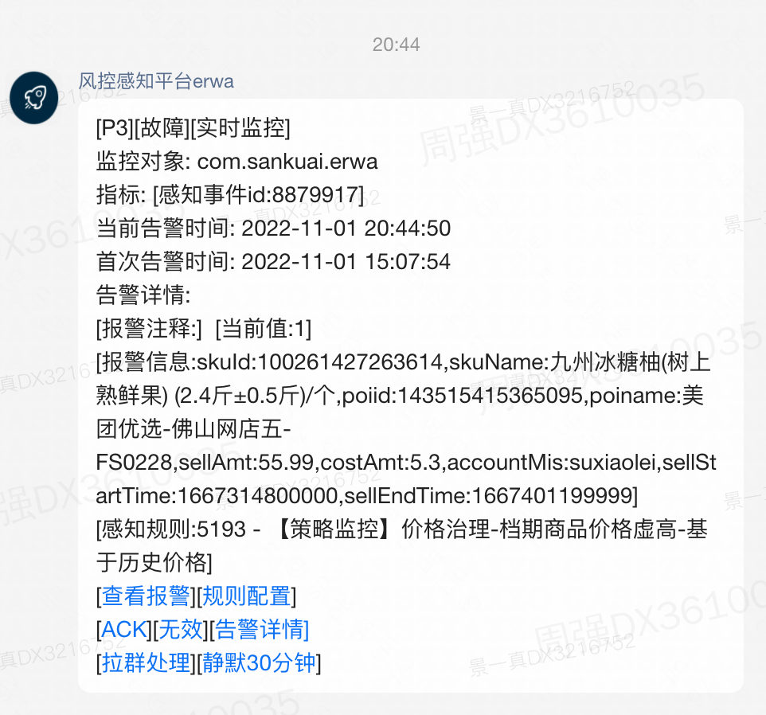 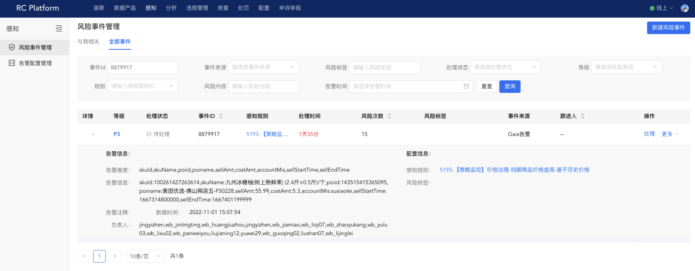 |
|||||||||||||||||||||
Step5: 关闭监控 |
||||||||||||||||||||||
|
1.找到目标场景配置，点击操作中的“查看监控” 2.点击监控开关，关闭监控 3.确认弹框点击“关闭” --> 关闭成功 |
1.找到目标场景配置，点击操作中的“查看监控” 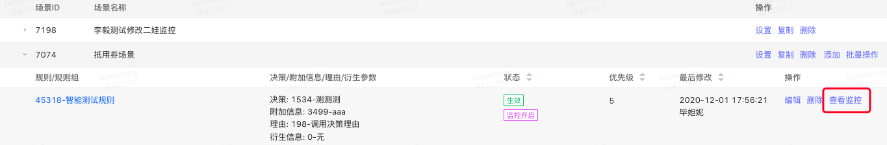 2.点击监控开关，关闭监控 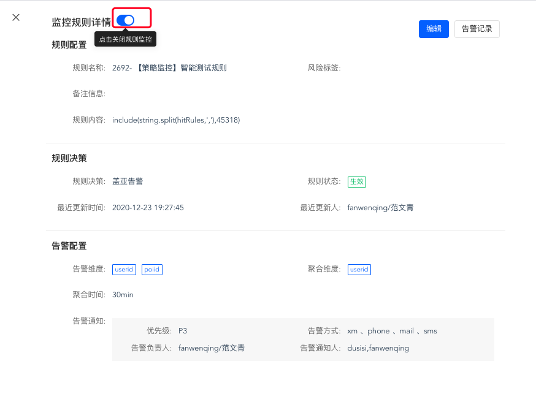 3.确认弹框点击“关闭” --> 关闭成功 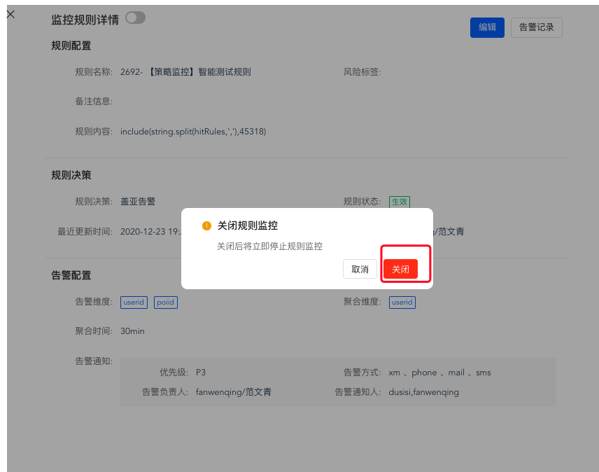 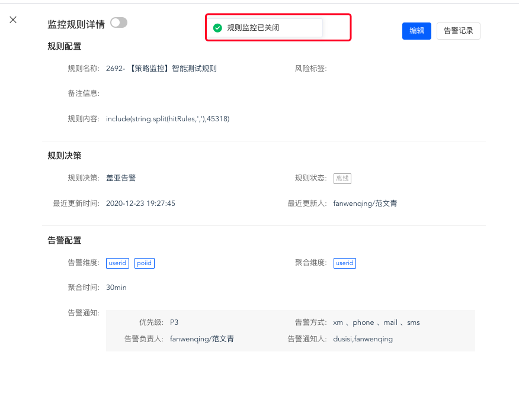 |
|||||||||||||||||||||
4.补充说明
原Erwa平台新建告警配置中的【Zeus实时】数据源，已于2022.11.1正式下线，实时数据源统一收口至【zeus-rpc】。对于实时规则的监控，请统一于zeus场景配置后方操作栏入口进行配置。
通过Zeus入口配置监控后，会自动在Erwa告警平台生成一条监控告警配置（ID在zeus展开抽屉中可见）；默认数据源为zeus-rpc；默认的监控逻辑为「该条场景配置的命中」，例：include(string.split(hitRules,','),55938)，55938即为zeus规则id。
注意，该表达式隐含了场景、决策信息，即实际效果是该【场景-规则-决策】每当有命中数据，erwa就会结合聚合维度与聚合时间，决定是否告出。
目前通常用户对于Erwa告警内容的使用习惯为：获取报警信息后，直接去业务上/zeus策略中进行相关的排查与处理，并不在erwa平台做其他操作。
Erwa上历史遗留的一些后置处理功能及实现情况 已较难追溯，建议可忽略。常规ACK操作可在Erwa操作栏实现。
后续（2023年）平台将会统一规划监控告警与熔断服务的形态，会重新整理用户诉求。相关意见&建议欢迎反馈❤️
四、FAQ
Q1：规则命中但没有收到告警找谁排查？
--A：提tt，然后联系it_rc_zeus排查
Q2：告警发生延迟，找谁排查？
--A：提tt, 然后联系it_rc_zeus排查
Q3：告警还支持其他维度么？
--A：Zeus日志里有的都支持，可以在告警规则中写明
Q4：想看告警的日志数据，在哪里查看？
--A：美团点评日志中心